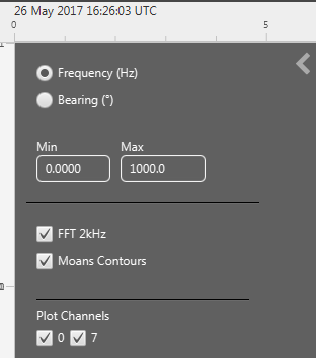
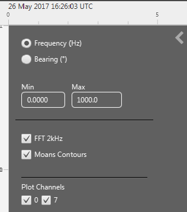

The Time Display FX is a general and flexible display for displaying time based data from multiple sound processing and detection modules.
The display uses the Java FX graphics library which is only available if you are running Java version 8 or above (i.e. not Java 7).
Time is always displayed along one axis of the display, the units of the other axis can vary depending on the type of data, for instance, click detector output can contain bearing, inter-click interval, amplitude or frequency information, whereas FFT output can only display frequency information.
Types of data which can be shown on this display are shown in the table below:
| PAMGuard Module | Data Type | Axis type(s) |
|---|---|---|
| FFT (Spectrogram) Engine | FFT Data | Frequency |
| Click Detector | Clicks | Bearing; Interclick interval (ICI); Amplitude; Frequency |
| Whistle and Moan Detector | Whistle / Moan Contours | Bearing, Frequency |
| Sound Acquisition | Raw Audio Data | Amplitude |
Data from other modules will be added in future releases
Any number of Time Displays can be created within PAMGuard User Display Panels.
Once a User Display Panel has been created, the option to create a "New time base display fx" will appear in the User Display menu. Select this menu option and an empty display container will appear.
Click on the downward poining arrow 'V' in the middle near the top of the display to show the display configuration panel.
To configure the display the user must understand the concept of "Graphs"
A display panel can contain any number of graphs, with each one being stacked vertically in the display. All graphs within a display panel will share a common time axis and time scroll bar, however each graph can have a different data axis dimension (e.g. bearing, frequency, amplitude, etc.)
The data axis dimension is controlled by the type of data added to each graph.
To add or remove graphs, use the + and - buttons at the left end of the configuration panel

Add data to a graph by clicking on the Graph buttons in the configuration panel to show a drop down menu of available data types (if no data are available, then add some modules to your PAMGuard configuration). Data can be removed from a graph using the same menus.
You can add as many types of data to a graph as you wish and the data will be plotted on top of one another. There are no constraints as to which data are mixed within a graph, but the user should select data which can be plotted on a common axis, i.e. it's not sensible to select one type of data which can only display frequency and another which can only display amplitude.
Once data have been added to a graph, the display will examine each type of data to see which data dimensions it supports and construct a list of possible dimensions from all types of data connected to that graph. To select the dimension of the display axis, click on the small > arrow in the top left corner of a graph and a larger panel will appear showing all possible options.
 

In this case, the graph is showing both Spectrogram data (FFT 2kHz) and the output of a Whistle and Moan detector (Moans Contours). The Spectrogram data can show only on a Frequency axis, whereas the moans can show either on a frequency or on a bearing axis. Therefore if the frequency axis is selected, both the spectrogram AND the Moans Contours will show, however if the bearing axis is selected, then only the Moans will show.
Also note that the display has discovered that the FFT data is multi-channel (channels 0 and 7 in this case) and additional options have been provided to display only certain channels of data. Different channels are displayed within separate display strips within each graph.
When running in real time mode, the display can operate in "Scroll" or "Wrap" mode. Toggle between the two modes using the button with left / right arrows in the configuration panel. Scrolling often looks nicer, but if you're trying to mark data in real time, wrapping can often be easier since things are moving around less.
 To mark data on the display, select the "Allow marking" button in the
configuration panel. To make and use data marking, you will also need
to correctly configure the relationship between the display and marked
data and will have to hold down the Ctrl while making marks. For more
information see Display
Marking. The display will pause while marks are being drawn.
To mark data on the display, select the "Allow marking" button in the
configuration panel. To make and use data marking, you will also need
to correctly configure the relationship between the display and marked
data and will have to hold down the Ctrl while making marks. For more
information see Display
Marking. The display will pause while marks are being drawn.
Many types of data have a number of options controlling how they are displayed, for instance the colour used for symbols, amplitude ranges of spectrograms, etc.
Configuration panels for individual data types are available by clicking on the settings button in the top right corner of each graph. The example below shows settings panels for a graph showing Spectrogram and Whistle and Moan Detector data. For the spectrogram, the user can select the frequency range to display and the amplitude colour and scale. For the 'moans' it is possible to select a symbol type and colour.